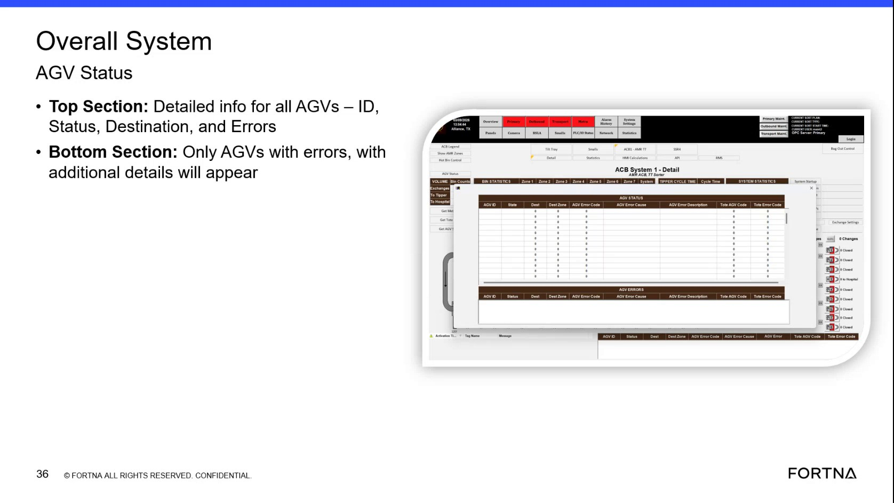

| Procedure ID | proc_check_fleet_level_agv_status_overall_system_agv_status_v1 |
|---|---|
| Title | Check Fleet-Level AGV Status on “Overall System AGV Status” (Top: all AGVs, Bottom: AGVs with errors) |
| Procedure Type | diagnostic |
| Primary Role | L1_support |
| Support Safe | Yes |
| Capability Tags | None |
| Access Surface | rms_ui |
| Audience Roles | L1_support |
| Failure Pattern Tags | None |
| Validation Status | needs_sme_review |
| Merge Status | source_finalized |
Use the RMS / fleet status UI screen labeled “Overall System AGV Status” to review fleet-level AGV information. Confirm the Top Section lists all AGVs with columns for ID, Status, Destination, and Errors, then use the Bottom Section (“Only AGVs with errors”) to identify which AGVs currently have errors.
When you need a fleet-level view of AGV status and to quickly identify which AGVs currently show errors using the “Overall System AGV Status” screen’s two sections (Top: all AGVs; Bottom: only AGVs with errors).

Responsible role: L1_support
Instruction:
Using the RMS / fleet status UI (rms_ui), open the screen labeled “Overall System AGV Status”.
Expected result:
The “Overall System AGV Status” screen loads and shows two sections: a Top Section for detailed info for all AGVs and a Bottom Section labeled for AGVs with errors.
Stop or Escalate If:
Responsible role: L1_support
Instruction:
In the Top Section (“Detailed info for all AGVs”), confirm the table/fields shown include: AGV ID, Status, Destination, and Errors.
Expected result:
The Top Section displays columns/fields labeled for ID, Status, Destination, and Errors.
Responsible role: L1_support
Instruction:
Scan the Top Section rows and observe which AGVs have non-empty values in the Errors column.
Expected result:
At least one AGV row shows a non-empty Errors value (if any errors are present in the fleet view).
Responsible role: L1_support
Instruction:
Scroll/inspect the Bottom Section labeled “Only AGVs with errors” and confirm it lists only AGVs that have errors.
Expected result:
The Bottom Section shows only AGVs with errors (i.e., the list is filtered to error-bearing AGVs).
Stop or Escalate If: